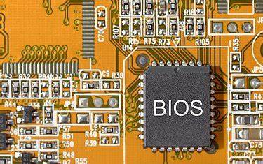
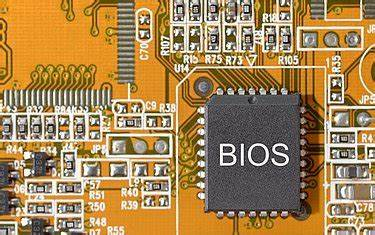

Las siglas BIOS hacen referencia a las palabras Basic Input-Output System, que en español significa Sistema Básico de Entrada-Salida. La BIOS es lo primero que se ejecuta al encender un ordenador, una tablet, un smartphone o cualquier otro tipo de aparato electrónico. Si bien cuando no se trata de un ordenador no se suele llamar BIOS, en esencia es lo mismo. La BIOS es una secuencia de códigos de ejecución (software) almacenada en un chip de la placa base (hardware) que permite a misma reconocer qué está conectado a ella; procesador, tarjeta gráfica, RAM, unidades de almacenamiento… y cualquier otra tarjeta adicional PCIe. Sin la BIOS tan solo tendríamos una placa base, no un ordenador.